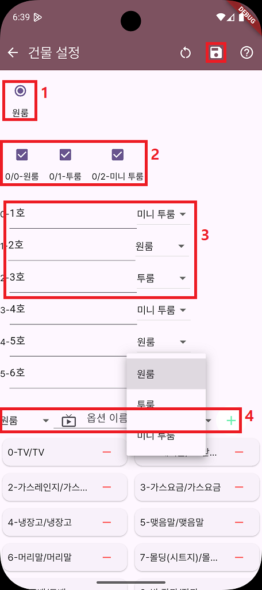

건물 상세 정보 설정
사용자에 대한 기본 정보의 설정이 완료되면 건물의 상세 정보를 입력할 수 있습니다.
- 건물 유형을 선택합니다.
현재는 하나의 건물 유형인 '원룸'을 선택할 수 있습니다.
향후, 관리자에 의해 다양한 건물의 유형이 추가될 예정입니다.
- 선택한 건물 유형이 갖는 호실 유형을 선택합니다. 1항에서 건물 유형으로 원룸을 선택했다면 호실의 유형 중에 원룸, 투룸, 미니 투룸을 선택합니다.
다수 선택 가능합니다.
- 기본 정보에서 설정한 호실의 갯수만큼 호실의 이름과 호실의 유형을 설정할 수 있는 화면이 나타납니다.
호실의 이름을 입력하고 호실의 유형을 드랍다운 메뉴를 클릭하여 선택합니다.
- 각 호실 유형에 대하여 호실에 포함된 옵션의 이름과 종류를 추가하거나 삭제할 수 있습니다.
- 하단의 화면에는 각 옵션에 대해 점검할 항목과 각 항목 당 선택하여 지정할 수 있는 점검 값의 목록을 추가하거나 삭제할 수 있습니다.
(1)을 클릭하여 수정할 옵션의 종류를 선택합니다.
(a)를 체크하여 해당 점검 항목을 선택하고 필요한 값을 (b)에 입력하고 '+' 버튼을 클릭하여 값의 목록에 추가합니다. '-' 버튼을 클릭하여 삭제할 수 있습니다.
설정이 완료되면 상단의 저장 버튼을 클릭하여 저장합니다.
처음부터 다시 진행하려면 '초기화' 버튼을 클릭하여 정보의 설정을 초기화합니다.
